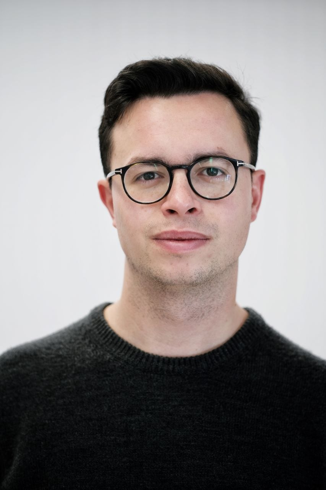

University of Vienna
Sep 2026 – Present
PhD in Mathematics · Vienna, Austria
- Advisor: Prof. Daniele Semola
- Topic: Geometric Analysis under lower Ricci curvature bounds
PhD Student in Mathematics · University of Vienna

I am a PhD student in Mathematics at the Department of Mathematics, University of Vienna, supervised by Prof. Daniele Semola. My doctoral research focuses on Geometric Analysis under lower Ricci curvature bounds.
Previously, I was an Allievo Ordinario at Scuola Normale Superiore in Pisa and completed my Master's degree in Mathematics at the University of Pisa, alongside an exchange semester at ETH Zürich.
Research Interests: Geometric Measure Theory, Optimal Transport, Functional and Harmonic Analysis, Metric Geometry and Analysis on Metric Measure Spaces (synthetic Ricci curvature bounds).